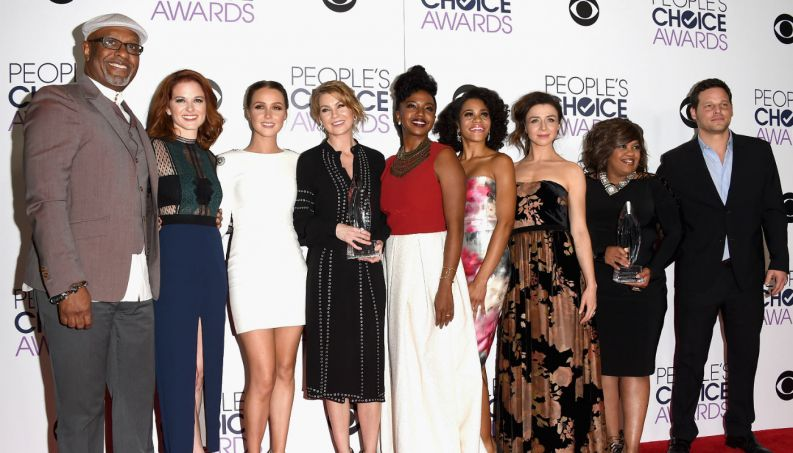

Para você entrar de verdade dentro do mundo grey's anatomy, porque não ler a esse artigo escutando a música tema da
série? Play:

O que é?
Grey's Anatomy é um drama médico que segue e foca na vida de médicos cirurgiões internos, residentes e atendentes;
e como eles evoluem na sua profissão ao tentar manter a vida dos seus pacientes e nos seus relacionamentos
pessoais. Se passa no fictício Seattle Grace Hospital, que mais tarde muda de nome, localizado em Seattle.
Apesar de apresentar vários personagens principais, o personagem central e titular é a Dra. Meredith Grey,
que também funciona como a narradora principal da história.
Sinopse
A série segue Meredith Grey e a equipe de médicos do Memorial Grey Sloan que enfrentam
diariamente decisões de vida ou morte. Eles buscam conforto um do outro e, às vezes, mais
do que apenas amizade. Juntos, eles descobrem que nem a medicina nem os relacionamentos
podem ser definidos em preto e branco.

Conceito de Produção
Shonda Rhimes, queria fazer uma série que ela gostaria de assistir e pensou que seria interessante criar uma
sobre "mulheres inteligentes competindo umas contra as outras". Rhimes assinalou: "séries médicas são difíceis,
e era difícil tentar descobrir onde a nossa poderia ser diferente." Mas enquanto todos os outros estão correndo com
suas séries médicas, ela encontrou uma maneira de deixa-lá devagar, para você então poder conhecer os personagens.
Rhimes inicialmente concebeu Grey's Anatomy como uma declaração contra o racismo. Ela trabalhou para criar um
programa com um elenco racialmente diversificado que permitia que os espectadores se relacionassem com os personagens,
independentemente da raça. Ela dizia: "Eu queria criar um mundo em que você se sentisse como se estivesse assistindo
mulheres muito reais. A maioria das mulheres que vi na TV não pareciam pessoas que eu realmente conhecia(...)"

Algumas Curiosidades
Cada título de episódio se origina do título de uma música;
O título do programa é uma referência ao livro de anatomia Gray's Anatomy;
Usando a primeira letra do primeiro nome de cada um dos estagiários originais, a palavra m a g i c pode ser escrita.
O show foi originalmente intitulado Complications;
Todos os estagiários originais, Meredith Grey, Cristina Yang, Alex Karev, George O'Malley e Izzie Stevens, passaram
por uma cirurgia em algum momento da série;
Não há uma temporada até o momento em que todos os membros do elenco principal dessa temporada apareçam em todos os
episódios.
Elenco Principal Inicial
A série Grey's anatomy vive mudando seu elenco principal e, por isso, é difícil especificar o elenco principal. Isso depende
de qual temporada você está assistindo e, também, de qual episódio. A seguir estão apresentados os personagens principais
iniciais, ou seja, de quando comçou a série.

Trailer
Grey's Anatomy é uma série enorme, com mais de 17 temporadas, e, por isso, não é fácil explica-la em poucas
palavras. O jeito mesmo é assitindo. Se, após ler esse artigo, se interessar e quiser saber mais sobre essa
série, aperte o botão abaixo e assista ao trailer/inicio dessa série maravilhosa!!